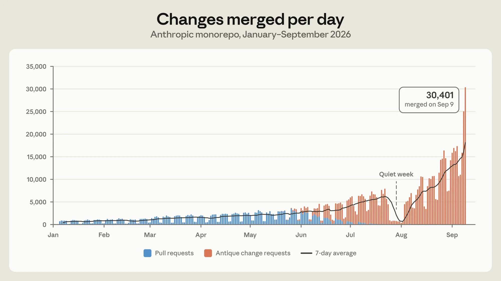
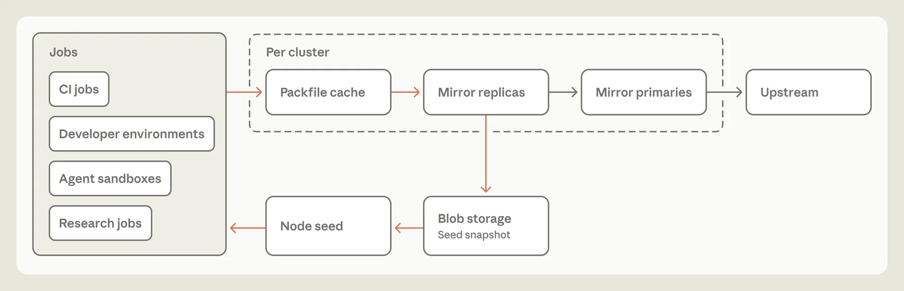
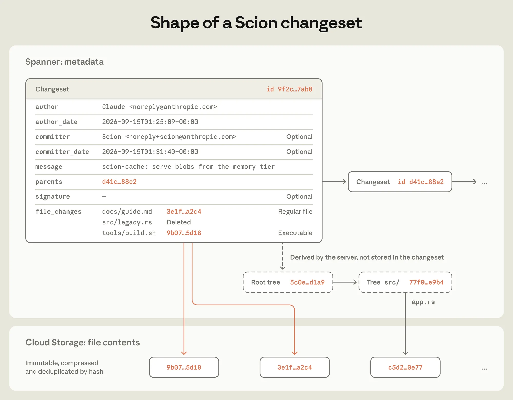
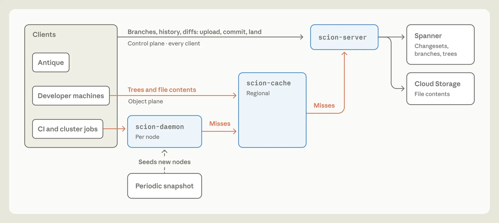
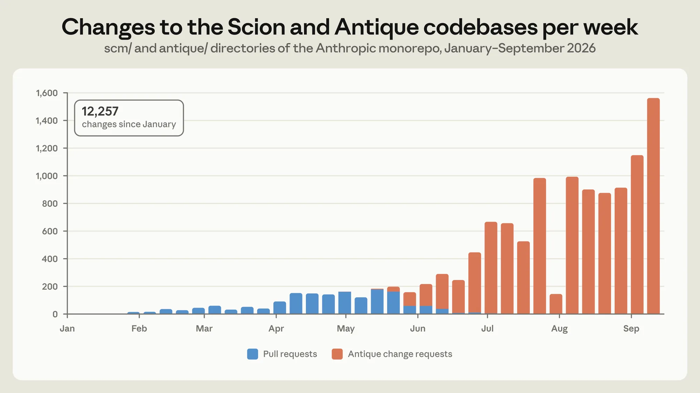
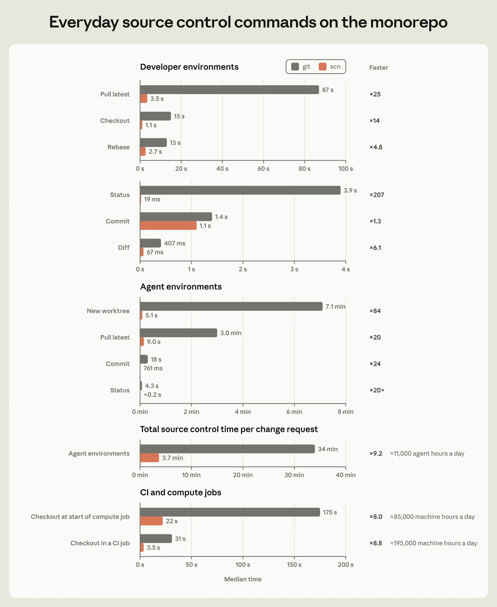

Anthropic Research · 2026-10-13
Redesigning source control at Anthropic在 Anthropic 重新设计版本控制
60 秒速览：这篇文章在说什么
译者所加，不是原文的一部分 —— 读完这 6 条，再看原文会快很多。
- 一句话结论：AI 写代码的速度第一次超过了「为人类规模设计」的开发者基础设施——Anthropic 的版本控制先撑不住了，于是自研了 Scion，并用五个月把内部巨型 monorepo 从 git 全量迁走。
- 动因是数量级：2026 年 5 月每天约 2,500 次合并，9 月超过 30,000 次；主分支历史接近 100 GB，压缩后的工作副本超过 25 GB，每天约 2,500 万次代码检出——照老办法要产生 600 PB/天的 git 流量。
- 换掉的不是命令，是前提：git 假设客户端离线、需要完整仓库；Scion 假设客户端永远在线，历史和 blame 由服务端回答，客户端只留一个有界缓存。
- 核心数据结构：工作单元从 commit 换成 changeset——写进预写日志、只记录相对第一个父提交的改动；blame、路径历史、skip list 这些「派生数据」由一个通用机制递归算出。
- 结果：7 个人、5 个月，同时建成 Scion 与代码评审工具 Antique 并完成迁移，期间合并量还涨了 10 倍；Scion 的 CPU 与内存占用比原来的 git 镜像方案小 200 倍，检出从分钟级降到秒级，CI 单独省出 25% 的 CPU。
- 边界：Scion 并不适合替代通用场景的 git，只对「数万工程师、或成群的智能体」这种超大 monorepo 有意义；作者更希望把这些思路反哺给 git 生态，而不是让大家都换系统。
git 的设计前提：人、离线、完整副本
- 每个克隆都是完整、自包含的仓库
- 离线也能算 diff、读历史与 blame、检出任意版本
- 想查仓库问题，得先有本地副本或厂商专有 API
- 靠 packfile 压缩与定期维护来省空间
- 提交先在本地产生，再 push 分享
- 检出（checkout）是默认动作，大仓库靠内部镜像、浅克隆、快照（seeds）扩展
Scion 的设计前提：智能体、永远在线、服务端权威
- 服务端是权威副本，客户端只保留有界的对象缓存
- 历史、blame、合并、变基都由服务端回答
- 所有查询都通过 API 暴露，作业可以没有本地仓库
- 没有 packfile，因此也没有仓库维护
- 提交在服务端产生，没有「push」这一步
- 检出变成可选：稀疏检出、虚拟化检出按需取文件
六行分别对应正文第三节的六条设计原则。差别不在功能，而在「谁在线、谁掌握完整数据」。
读法建议：先看第 1、3、4 条拿到主线，再读正文。第 2 条的数字要和配图 1 一起看：30,401 是 9 月 9 日的单日峰值，7 日均线约 1.8 万；第 5 条的三个数字（规模只剩 1/200、检出从分钟到秒、CI 省 25% CPU）是全文最有说服力的结果。
一句话：AI 写代码已经不再是瓶颈，为人类规模设计的那套开发者基础设施（版本控制、构建、CI）成了瓶颈。Anthropic 的回应是自研版本控制系统 Scion，五个月完成内部 monorepo 的迁移。
Updated October 15 to include more detail on the projects that pioneered many of the techniques we use in Scion.
10 月 15 日更新：补充了更多细节，说明我们在 Scion 中沿用的许多技术，最早是由哪些项目开创的。
At Anthropic, coding is no longer the bottleneck to building systems or doing research. Claude is able to autonomously iterate on research loops, micro-optimize complex programs, and build new services from the ground up at a speed and scale we haven’t seen before. The bottleneck, now, is all of the developer infrastructure built for human scale: source control, builds, and CI.
在 Anthropic，写代码已经不再是构建系统或做研究的瓶颈。Claude 能自主地反复迭代研究流程、对复杂程序做微优化，也能从零开始搭建新服务，速度和规模都是我们此前没见过的。现在的瓶颈，变成了那一整套按人的规模设计的开发者基础设施：版本控制、构建和持续集成（CI）。
In May 2026, Anthropic averaged around 2,500 code changes merged per day; as of September, we merged over 30,000 per day. We don’t expect this rate of growth to slow down anytime soon; the latent demand for merging code is practically infinite, and every bottleneck we remove immediately leads to a further increase in the amount of code we produce.
2026 年 5 月，Anthropic 平均每天合并约 2,500 处代码改动；到 9 月，我们每天合并的改动超过 30,000 处。我们预计这个增速短时间内不会放缓；合并代码的潜在需求几乎是无限的，而且我们每拆掉一个瓶颈，代码产出立刻又涨一截。

单日合并量九个月增长曲线 对应正文「5 月日均约 2,500 次、9 月已超 3 万次」：蓝条 Pull requests 与橙条 Antique change requests 此消彼长，黑线 7-day average 爬升到约一万八千，峰值 30,401。
原文图注：Changes merged to our monorepo per day, from January to September 2026.
这张图怎么看（5 条）
- 纵轴 0 到 35,000，刻度每格 5,000，横轴从 Jan 走到 Sep，读的是每日合并量而非月总量。
- 蓝条 Pull requests 前五个月占绝对多数，6 月起橙色 Antique 变更条接管，颜色交替就是迁移节点。
- 黑线是 7-day average，7 月底 Quiet week 处跌到谷底，9 月底回到约 18,000。
- 右上气泡只标峰值：30,401 merged on Sep 9，对应正文「9 月已超 3 万」的说法。
- 口径提醒：30,401 是 9 月 9 日的单日峰值，黑色 7 日均线到月底约 1.8 万；正文那句「每天超过 3 万」应按单日口径读。
一句话：单日合并量九个月涨近一个数量级，人类规模的 git 工具链开始失效。
In order to support this growth, we built Scion1, an in-house version control system, and fully migrated our monorepo from git in five months. We also built and shipped a code review surface (called Antique), code search, a rich source control IAM system, novel ways of managing and landing large amounts of reviewed code, and more, all in that same time period. In this post, we’ll focus on how we built Scion specifically. It makes for an interesting case study: Claude’s ability to write code was both what put us in this situation in the first place and how we were able to quickly build a high-quality, scalable system to deal with it.
为了支撑这样的增长，我们自研了一套版本控制系统 Scion1，并在五个月里把我们的单体仓库（monorepo）从 git 完整迁移了过去。在同一段时间里，我们还建成并上线了代码评审界面（名为 Antique）、代码搜索、一套细粒度的版本控制身份与访问管理（IAM）系统，以及用来管理和合入大批已评审代码的新办法，等等。本文只聚焦一件事：Scion 具体是怎么建起来的。这是一个很有意思的案例：Claude 写代码的能力，既是一开始把我们推进这个局面的原因，也正是我们能迅速做出一个高质量、可扩展的系统来应对它的原因。
Growing our monorepo让单体仓库长大
本节要点（译者所加）：git 的假设是「每个人都有完整仓库、可以离线工作」，但 Anthropic 的仓库已经大到「拿一份完整副本」本身就不现实。他们用过所有现成的办法，只买到了时间。
Before we explore what we built, we should acknowledge how unusual our workload is. Unsurprisingly, Anthropic uses Claude to write software far more than almost any other company, so we’re often the first to see where tools built for human scale start to strain. Source control is just one example of this. While we don’t expect many organizations to have these problems in the very near term, we suspect it won’t be too long before others who use AI coding tools experience these same pressure points, which is why we wanted to share what we built and what we learned.
在讲我们造了什么之前，得先承认：我们的工作负载很不寻常。不出意外，Anthropic 用 Claude 写软件的程度远超几乎所有其他公司，所以「为人类规模设计的工具从哪里开始吃不消」，我们往往是最早撞上的那批人。版本控制只是其中一例。我们并不认为很多组织在短期内就会遇到这些问题，但我们猜，用不了多久，其他使用 AI 编程工具的团队也会经历同样的压力点——这正是我们想公开自己造了什么、学到了什么的原因。
Git is a decentralized system: every clone is a complete, self-contained repository that can compute diffs, read history and blame, and check out any revision while fully offline. For the vast majority of repositories, this is the right design, and it’s a large part of why git became the standard.
git 是去中心化系统：每个克隆都是一个完整、自包含的仓库，可以完全离线地计算差异、读取历史与 blame（逐行追溯），并检出任意版本。对绝大多数仓库来说，这是正确的设计，也是 git 成为标准的重要原因之一。
As our monorepo grows, it increasingly doesn’t fit that design space. The history of our main branch alone is almost 100 GB, and a compressed working copy is over 25 GB. We perform on the order of 25 million code checkouts per day for CI, before counting developer environments, agent sandboxes, and research jobs. Fetched naively, that would be over 600 PB of git traffic per day.
随着我们的单体仓库变大，它越来越落在 git 那套设计能覆盖的范围之外。光主分支的历史就接近 100 GB，而一个压缩过的工作副本也超过 25 GB。为了持续集成（CI），我们每天要执行约 2,500 万次代码检出，这还没算开发环境、智能体沙箱和研究任务。如果每次都按最朴素的方式拉取，每天会产生超过 600 PB 的 git 流量。
Git offers tools for working with a slice of a repository, such as shallow clones, sparse checkouts, and promisor remotes. Beyond these, there are standard workarounds for large monorepos, like internal git mirrors and repository snapshots (seeds) kept in blob storage. We’ve used all of them—at our peak, we operated several hundred internal git mirrors to deal with the load. This bought us time, but they became harder to operate as our merge rate increased. Seeds fell further from the tip of main between refreshes, and it took more and more care to keep operations that depend on history, like diff and blame, working on partial clones.
git 提供了一些只处理仓库一部分的工具，例如浅克隆（shallow clone）、稀疏检出（sparse checkout）和承诺式远程（promisor remote）。除此之外，大仓库还有一些标准绕行方案：内部 git 镜像，以及存放在数据块（blob）存储里的仓库快照（seeds）。这些我们全用过——高峰期我们运维着几百个内部 git 镜像来扛住负载。这确实给我们争取了时间，但随着合并率上升，它们的运维越来越难。两次刷新之间，seeds 离主干末端越来越远；要让依赖历史的操作（比如 diff 与 blame）在不完整克隆上继续工作，需要的照顾越来越多。

git 检出扩容的典型架构 正文讲内部 git 镜像与 blob 种子快照时，给出这套扩容架构：作业先经 Packfile cache 进 Per cluster，再到 Mirror replicas 与 Upstream，快照则写进 Blob storage。
原文图注：The typical setup for scaling git checkouts.
这张图怎么看（4 条）
- 左侧 Jobs 框列着 CI jobs、Agent sandboxes、Research jobs。
- 虚线框 Per cluster 内先到 Packfile cache，下一跳是 Mirror replicas。
- Mirror primaries 之后才是 Upstream，镜像链到此为止。
- Mirror replicas 把快照写进 Blob storage，再由 Node seed 分发到节点。
一句话：镜像、缓存与种子快照层层叠加，复杂度和成本正是 Scion 要替换的。
Taking a step back, we noticed that, like most companies, we were using git as a centralized system with one authoritative copy2, but nearly all of our clients were agents and jobs that are online by definition. The properties that make git excellent for distributed, offline work were actively undermining our ability to scale as the repo grew. So we asked ourselves: if we designed source control with the fact that agents are always online in mind from the start, what would it look like?
退一步看，我们注意到：和大多数公司一样，我们把 git 当成中心化系统在用，只维护一份权威副本2；但我们的客户端几乎全是智能体和作业，而它们按定义就是永远在线的。那些让 git 极其擅长分布式、离线工作的特性，恰恰在仓库变大时侵蚀我们的扩展能力。于是我们问自己：如果从一开始就以「智能体永远在线」为前提来设计版本控制，它会是什么样子？
Principles for agent-scale source control为智能体规模的版本控制定原则
本节要点（译者所加）：六条原则可以压成一句话——把「离线、完整副本、客户端什么都能干」这三个 git 的前提全部反过来，换成「永远在线、服务端权威、按需取数据」。
With agentic coding, many common assumptions about how software is developed are evolving. We embraced these changes when building Scion, which allowed us to take a fundamentally different approach than git on several core principles. Source control for huge monorepos has prior art, notably Google’s Piper and Meta’s Sapling,2 so we were able to build Scion with their hard-won lessons in mind. Our principles are:
How Scion worksScion 是怎么工作的
本节要点（译者所加）：先讲数据模型（changeset 加派生数据），再讲扩展方式（服务端只是一层可缓存的计算，客户端按需递归取树）。两条都围绕「任何地方都没有一份完整副本」这个前提。
It’s helpful to understand how these principles came together in practice when building Scion. These insights can apply to other source control systems or, more broadly, to other stages of the software development lifecycle.
看看这些原则在构建 Scion 时是怎么落到实处的，会很有帮助。这些经验也适用于其他版本控制系统，或者更广泛地说，适用于软件开发生命周期的其他阶段。
Data structures数据结构
In Scion, the unit of work is a “changeset,” an entry in a write-ahead log. A changeset stores most of what you’d expect from a commit in git. But where a git commit stores a pointer to the tree, a changeset stores a list of the files that changed relative to its first parent1, along with content-addressed pointers to the compressed file contents in blob storage. Changesets are created server-side and are available everywhere, instantly.
在 Scion 里，工作单元是「变更集（changeset）」，也就是预写日志（write-ahead log）里的一条记录。变更集存了你在 git 的提交里预期会有的大部分内容。但 git 提交存的是指向目录树（tree）的指针，变更集存的是「相对第一个父提交发生了改动的文件列表」1，外加指向数据块（blob）存储中压缩文件内容的内容寻址指针。变更集在服务端创建，随即在任何地方都能拿到。

Scion 变更集的字段结构 对应正文「changeset 存的是相对第一父提交的改动文件列表」：Spanner 存元数据，Cloud Storage 存按哈希寻址的文件内容，虚线框里的 Root tree 与派生数据由服务器计算、不写进 changeset。
原文图注：The shape of a changeset in Scion.
这张图怎么看（5 条）
- Changeset 表头 id 是 9f2c…7ab0，下面是 author、parents、message 等字段。
- committer、committer_date 与 signature 三行都标 Optional，表示这三个字段可以填、也可以不填。
- 文件行分三种标记：Regular file、Deleted、Executable，Deleted 那行不带哈希。
- 虚线框是不入库的派生数据：Root tree 5c0e…d1a9、Tree src/ 77f0…e9b4。
- Cloud Storage 里内容 immutable、按哈希去重，地址如 9b07…5d18。
一句话：changeset 只记改动，树结构与派生数据由服务器算，写入才能高吞吐。
This structure lets us accept changesets with very high throughput because there are no packfiles to accept, no locking or cross-server coordination, and no refs to move around. Scion does technically support refs, but since neither creating nor fetching commits involves them, moving one is a compare-and-swap on a single Spanner row that happens separately from creating changesets.
这个结构让我们能以极高吞吐接收变更集：没有打包文件（packfile）要接收，没有加锁或跨服务器协调，也没有 ref 要挪动。Scion 在技术上确实支持 ref，但由于创建和拉取提交都不涉及它们，移动一个 ref 只是对 Spanner 中单行做一次比较并交换（compare-and-swap），与创建变更集分开进行。
A changeset records only what’s changed, so on its own, it can’t quickly answer questions like who last edited a line or which commits affected a file. To answer those, Scion builds additional data structures from the changesets, including dedicated structures for file blame and path history and skip lists for the commit graph. We call everything that isn’t directly part of the changeset “derived data,” and we compute it all through one generic mechanism. Each type of derived data is defined recursively, so its value for a changeset is computed from its values for that changeset’s parents.
变更集只记录「变了什么」，所以单靠它，没法快速回答「某一行最后是谁改的」「哪些提交影响过某个文件」这类问题。为了回答这些问题，Scion 会从变更集再构建一些附加的数据结构，包括专门用于文件 blame 与路径历史的结构，以及用于提交图的跳表（skip list）。所有不属于变更集本身的东西，我们统称为「派生数据」，并且全部通过同一套通用机制算出。每一类派生数据都用递归方式定义：某个变更集上的取值，由它各个父提交上的取值算出来。
This mechanism has three benefits. First, we can easily add a new type of derived data when a new data structure would make some operation faster. Second, for each type, we can choose whether to compute it eagerly or defer the work, so we avoid materializing data we don’t need. And third, because the client never sees the internals of these data structures, we can optimize them without changing the client. We’ve added new types of derived data many times as the system has grown, such as new indices for performing copy detection or path-based file search.
这套机制有三个好处。第一，当某种新数据结构能让某个操作更快时，我们可以很容易地新增一类派生数据。第二，对每一类数据，我们可以选择是立即算还是推迟算，从而避免物化那些并不需要的数据。第三，因为客户端从来看不到这些数据结构的内部，我们可以优化它们而不必改动客户端。随着系统成长，我们已多次新增派生数据类型，比如用于做复制检测、或基于路径的文件搜索的新索引。
Scaling Scion扩展 Scion
A small fleet of Scion servers provides source control APIs for any operation a client needs, such as getting changesets, computing diffs, finding merge bases, and fetching blobs. All source control data is content-addressed, so a piece of data never changes once it’s stored, and any server can cache it without checking with the others. As a result, the servers are horizontally scalable and require little coordination. They are essentially large caches that can also compute derived data on the fly and write the results back to Spanner.
一小群 Scion 服务器为客户端需要的任何操作提供版本控制 API，比如取变更集、算差异、找合并基线、拉取数据块。所有版本控制数据都是内容寻址的，所以一份数据一旦存下就永不改变，任何服务器都可以缓存它，不需要和其他服务器核对。因此，这些服务器可以水平扩展，且几乎不需要协调。它们本质上就是一批大缓存，同时还能即时计算派生数据，并把结果写回 Spanner。
Scion’s many consumers no longer need to maintain local repositories of their own. Fetching and maintaining the repository used to be a significant maintenance burden for CI jobs or tools that needed to ask source control questions, particularly about commit ancestry and blame. Early in the migration, before we had our own client, repo format, or protocols, Scion only answered these “metadata” queries. Fetching file contents and materializing working copies are far more data-intensive operations, and they needed a design of their own.
Scion 的众多使用方不再需要各自维护本地仓库。过去，对那些需要向版本控制提问（尤其是问提交祖先关系和 blame）的 CI 作业或工具来说，拉取并维护仓库是一大块维护负担。迁移早期，在我们还没有自己的客户端、仓库格式和协议之前，Scion 只回答这些「元数据」查询。而拉取文件内容、物化工作副本是数据密集得多的操作，需要单独设计。
Scion’s scn client5 deviates from git’s fetch protocols in several important ways and, as a result, lends itself to a highly scalable architecture that requires significantly less CPU than git servers. Scion’s negotiation doesn’t tell the server what the client already has; instead, it operates exclusively on trees and blobs the client wants. Starting from a root tree, the client checks its local store for missing trees and requests them recursively, then repeats the process for blobs. Every request is for a specific object that never changes, so any cache can answer it, and the architecture closely resembles traditional tiered caches. The process is also efficient and resumable, because there is no single multi-gigabyte packfile response. Sparse and even virtualized checkouts don’t need special support, because the client simply doesn’t ask for trees it doesn’t want.
Scion 的 scn 客户端5在几个重要方面偏离了 git 的 fetch 协议，因此很适合一种高度可扩展的架构，所需的 CPU 也明显少于 git 服务器。Scion 的协商过程不告诉服务器「客户端已经有什么」；它只围绕客户端想要的那些目录树和数据块进行操作。客户端从根目录树开始，检查本地存储里缺哪些树，再递归地请求它们，然后对数据块重复同样的过程。每个请求都是针对一个永不改变的具体对象，所以任何缓存都能应答，整体架构非常像传统的分层缓存。这个过程还高效、可断点续传，因为它没有一个几 GB 的打包文件响应要一口气传完。稀疏检出、乃至虚拟化检出都不需要特殊支持，因为客户端压根不会去要它不想要的树。
In the fleet, the client talks over a socket to a daemon, scion-daemon, that stores objects for the whole node. Most of our nodes need access to the monorepo, and jobs on the same node reuse most of the same objects. Each daemon starts from a periodically refreshed snapshot, then talks only to the tree and blob cache servers in its region, called scion-cache. These cache servers stream objects directly from memory, in the disk format that the daemon will consume, so they don’t need to spend time computing the client’s missing objects or performing delta compression. When a cache is missing an object, it asks the authoritative scion-servers, which read from Spanner or cloud storage as needed.
在这个服务器集群里，客户端通过 socket 与一个守护进程（daemon）对话，它叫 scion-daemon，为整个节点存储对象。我们大多数节点都需要访问这个单体仓库，而同一节点上的作业复用的是同一批对象中的大部分。每个守护进程都从一个定期刷新的快照起步，之后只和本区域的树与数据块缓存服务器通信，这些服务器叫 scion-cache。这些缓存服务器直接从内存里把对象流式发出，用的就是守护进程将要读取的磁盘格式，因此它们不必花时间去算客户端缺哪些对象、也不必做增量压缩。当某个缓存缺少对象时，它会去问权威的 scion-servers，后者按需从 Spanner 或云存储读取。
The scion-daemon, scion-cache, and scion-server all respond to identical RPCs for this protocol, so the client doesn’t need to know the cache topology. Any tier could theoretically talk to any other, but we strictly enforce the tiering to isolate failure domains. We want to avoid a situation where a failure in a regional scion-cache overwhelms the upstream scion-servers and brings down the entire system.
scion-daemon、scion-cache 和 scion-server 对这个协议都能应答同一套远程过程调用（RPC），所以客户端不需要知道缓存拓扑。理论上任何一层都可以和任何其他层通信，但我们严格强制分层，以隔离故障域。我们要避免的正是这种情况：某个区域的 scion-cache 出故障，把上游的 scion-servers 压垮，进而拖垮整个系统。

Scion 三级检出架构 正文说客户端经 socket 连 scion-daemon，未命中再问区域 scion-cache：图上 Clients 含 Antique、开发者机器与 CI 作业，控制面直连 scion-server，两处 Misses 逐级回源。
原文图注：Scion’s checkout architecture.
这张图怎么看（5 条）
- Clients 框含 Antique、Developer machines、CI and cluster jobs。
- 控制面标 Branches, history, diffs，客户端直达 scion-server 入 Spanner。
- 对象面标 Trees and file contents：开发者机器直连区域 scion-cache。
- CI 作业先经 Per node 的 scion-daemon；两处 Misses 箭头逐级回源。
- Periodic snapshot 通过 Seeds new nodes 给新节点做种子。
一句话：客户端只就近取对象，未命中才逐级回源，这是 Scion 水平扩展的关键。
Each tier of this system maintains a cache hit rate of over 99% and does not require long-lived state, so it’s easy to scale up if needed. Our Scion infrastructure footprint is now 200x smaller than our previous git mirroring infrastructure in terms of CPU and memory requirements. CI and research jobs check out code two orders of magnitude faster6 (in seconds rather than minutes), which frees up a sizable amount of capacity across the fleet; CI alone realized a 25% CPU capacity win. Neither clients nor caches need to perform repository maintenance, which simplifies the lifecycle management of our jobs.
这套系统的每一层缓存命中率都在 99% 以上，也不需要长期存活的状态，所以需要时很容易扩容。就 CPU 和内存需求而言，我们现在的 Scion 基础设施规模只有之前 git 镜像基础设施的 1/200。CI 与研究作业检出代码的速度快了两个数量级6（从分钟级变成秒级），这在整个集群里释放出相当可观的容量；仅 CI 一项就省出了 25% 的 CPU。客户端和缓存都不需要做仓库维护，这让我们作业的生命周期管理简单了很多。
What we learned building Scion建 Scion 学到的几件事
本节要点（译者所加）：六条讲的是「写代码变便宜之后，团队会怎么变」——人更少、系统被测得更狠、工程师的工作从写代码变成判断和说「不」、运维开始交给智能体盯着。
We started building Scion around the same time as Claude Mythos Preview and Claude Tag became available internally. Both of these releases simultaneously amplified the need for Scion and meaningfully accelerated how quickly we could build it.
我们开始构建 Scion 的时间，和 Claude Mythos Preview 与 Claude Tag 在内部开放的时间差不多。这两个版本同时放大了对 Scion 的需求，也实实在在地加快了我们把它做出来的速度。
Here’s a particularly striking example. Earlier in the year, we had largely handwritten the first version of the git-to-Scion ingestion pipeline as a prototype. We thought it was good—until we got our hands on an early internal snapshot of Claude Mythos Preview. We asked it to rewrite the whole thing, and with no further instructions, it produced a version that consumed 20x less memory and was 4x faster, while preserving all of the implicit invariants around ingestion ordering and data structures.
这里有一个特别扎眼的例子。今年早些时候，我们基本是手写了 git 到 Scion 的摄入流水线（ingestion pipeline）的第一版，作为原型。我们本以为它已经不错了——直到拿到 Claude Mythos Preview 的一个早期内部版本。我们让它把整条流水线重写一遍，没有给更多说明，它交出的版本内存占用降到二十分之一、速度快到原来的四倍，同时保住了摄入顺序和数据结构上所有隐式的不变量。

两个代码库的周变更量 对应正文小团队五个月重建 Scion 的进度：Scion（scm/）与 Antique（antique/）的周变更量，前五个月几乎全是蓝色 Pull requests，6 月后橙色 Antique 变更条成为主力，末周逼近 1,600。
原文图注：Merged changes to the Scion and Antique codebases per week, from January to September 2026.
这张图怎么看（4 条）
- 纵轴 0 到 1,600，单位是每周变更次数；蓝条与橙条上下堆叠，不是两条独立曲线。
- 1 到 5 月柱子几乎贴零，6 月起橙色快速抬升，7 月底和 8 月中各回落一次。
- 左上气泡 12,257 changes since January 是累计值，不等于任何一根柱子的高度。
- 最后一周接近 1,600，橙色完全取代蓝色，说明两个代码库都改走 Antique 流程。
一句话：两个新代码库的周变更量在迁移后陡增，印证了小团队五个月重建的节奏。
What we learned building and operating Scion offers some interesting lessons for what building agent-scale software could look like.
在构建和运维 Scion 的过程中学到的东西，对「智能体规模的软件工程会是什么样」给出了一些有意思的参考。

git 与 scn 日常命令耗时 正文说 CI 和研究作业的检出是瓶颈，这里按场景拆开对比：开发者环境、智能体环境、每次 change request 总耗时、CI 计算作业四组条形，灰条 git、橙条 scn，右侧 Faster 列给倍数。
原文图注：Observed performance improvements on native Scion repos.
这张图怎么看（7 条）
- 四组图的横轴单位不同：s、min、min、s，读之前先看每组自己的 0 刻度。
- 开发者环境 Status 从 3.9 s 降到 19 ms，倍数 ×207；Pull latest 是 ×25。
- 智能体环境 New worktree 7.1 min 对 5.1 s，倍数是 ×84。
- 总耗时 34 min 对 3.7 min（×9.2），折合约 11,000 agent hours a day。
- CI Checkout 175 s 对 22 s（×8.0），CI 作业内 31 s 对 3.5 s（×8.8）。
- 口径提醒：正文说 CI 与研究作业检出「快两个数量级、从分钟到秒」；按图上的倍数，两个数量级更接近 New worktree 的 ×84，CI Checkout 是 ×8.0——两者说的不是同一项操作。
- 图注与图上标题的措辞不同：图注写 native Scion repos，图上标题是 on the monorepo，指的都是同一批原生 Scion 仓库。
一句话：多数日常命令 scn 的耗时是 git 的 1/1.3 到 1/207，智能体与 CI 场景的节省最可观。
Contributing to the wider ecosystem回馈更大的生态
本节要点（译者所加）：作者明确说 Scion 不是给所有人用的，只适合超大单体仓库；他们更想做的是把思路讲出来，让 git 生态自己吸收——比如「服务端不必和客户端用同一套工作方式」。
We see Scion as just one part of the answer to the scaling concerns that increasingly capable AI agents have raised. We’re sharing these details as an example of how teams can tackle similar challenges, though we don’t expect our solution, or our considerations, to suit every case.
越来越强的 AI 智能体带来了扩展性上的担忧，我们认为 Scion 只是这类答案的一部分。我们公开这些细节，是把它当作「团队可以怎么应对类似挑战」的一个示例；不过我们并不认为自己的方案或考量适用于所有情况。
Scion is by no means a suitable replacement for git for general use. The concepts we’ve outlined here really only make sense for truly enormous monorepos, with either tens of thousands of engineers or swarms of agents prolifically writing code. Plus, Anthropic is unique in that our ability to spend tokens for internal use far exceeds what any other business would realistically want to spend. We do this both to address our own software development needs, and to test Claude’s capabilities.
Scion 绝不是 git 在通用场景下的合适替代品。我们在这里讲的概念，只对真正巨大的单体仓库才说得通——要么有几万名工程师，要么有成群结队的智能体在大量写代码。而且 Anthropic 有个独特之处：我们能花在内部使用上的 token，远超任何其他企业会真正愿意花的量。我们这么做，既是为了解决自己的软件开发需求，也是为了测试 Claude 的能力。
Practically speaking, it’s difficult to offer Scion in a form that would be broadly useful to other organizations. It diverges significantly from git, meaning companies would need to migrate every piece of the development lifecycle, and it requires its own code review, code search, and CI. Our internal versions of these components are highly bespoke, so they would be difficult for other organizations to adopt, and we worry that attempting to build a public version that tries to please everyone wouldn’t actually be very useful.
从现实角度说，很难把 Scion 做成一种对其他组织普遍有用的形态。它和 git 差异很大，意味着公司得把开发生命周期的每一环都迁过来；而且它需要配套自己的代码评审、代码搜索和持续集成。我们这些组件的内部版本高度定制化，其他组织很难直接用；我们也担心，硬做一个想让所有人都满意的公开版本，到头来未必真的有价值。
However, we anticipate that this class of problems will become more commonplace over the next six to 12 months, and it would be an inefficient use of engineering resources for every company using git to face similar challenges alone. Given that, we think the most impactful thing we can do is to share our thinking, so that other developers can apply some of the most successful parts of Scion to git without departing from the overall model. A git server doesn’t have to work the same way as a git client does; novel server architectures exist that provide significant scaling improvements. Git platforms can provide comprehensive server-side RPCs like Scion, perhaps even in a standardized way across forges that the git client can learn to talk to. The negotiation protocol doesn’t have to look exactly like it does today, either, and the various sparse and shallow features in git can be made to compose well.
不过我们预计，未来 6 到 12 个月里，这一类问题会越来越常见；如果每家使用 git 的公司都独自面对类似挑战，那是对工程资源的低效使用。既然如此，我们认为最有影响的事就是把思路讲出来，让其他开发者能把 Scion 里最成功的部分用到 git 上，而不必离开 git 的整体模式。git 服务器不必和 git 客户端用同样的方式工作；已经存在一些新的服务端架构，能带来显著的扩展性提升。git 平台可以提供像 Scion 那样完整的服务端远程过程调用（RPC），甚至可以跨托管平台形成标准化，让 git 客户端学着去和它对话。协商协议也不必和今天长得分毫不差；git 里各种稀疏、浅层的特性，也可以被设计成能很好地组合使用。
Lastly, we want to acknowledge that the git community has spent nearly two decades scaling the platform for millions of developers. Our contribution is far narrower: sharing our early view into how agentic software development interacts with these systems, so that we can partner with GitHub, GitLab, and the OSS community to support the changing needs of developers. We’re all in it together as the software development lifecycle intersects with the AI exponential.
最后，我们想承认一点：git 社区花了近二十年，为几百万开发者扩展这个平台。我们的贡献要窄得多：分享我们对于「智能体软件开发如何与这些系统相互作用」的早期观察，从而与 GitHub、GitLab 以及开源社区合作，支持开发者不断变化的需求。当软件开发生命周期撞上 AI 的指数曲线时，我们都在同一条船上。
补充材料
下面几块都是译者所加，用来补上原文没展开的部分。正文里的虚线链接、虚线术语、上标数字，都能悬停看卡片；这里给出完整的清单，方便你事后再回头查。
延伸阅读地图
原文 6 处正文引用，指向 6 个不同链接；另有 6 张配图未计入。按「不读会不会误解本文」分成三档：必读 / 背景 / 可选，建议顺序即卡片上标注的数字。每条都写了「不点开也能拿到的重点」，所以你可以完全不跳转地读完这篇文章。
Piper（源码控制系统）
Wikipedia · Piper (source control system)
正文对应：Piper
这是什么：英文维基百科条目，介绍 Google 内部自研的集中式版本控制系统 Piper，它支撑着存放数十亿行代码的单体仓库。
为什么值得点：本文把 Piper 列为超大单体仓库源码控制的先行者，说明 Scion 的设计并非凭空而来；想弄清 Google 这套系统与 Git 的根本差别，从这里入门最直接。
访问说明：链接有效（英文维基条目存在），但本机网络无法解析维基百科域名（DNS 受限），无法直接抓取正文；卡内要点依据条目检索结果与公开资料交叉核对。
不点开也能拿到的重点
这个条目讲的是 Google 的 Piper：当年 Google 找不到能承载单体仓库规模的现成版本控制系统，于是在 Perforce 的思路基础上自研。它先架在 Bigtable 上、后迁到 Spanner，分布在多个数据中心并用 Paxos 保证一致性；配合 CitC，开发者的工作区无需完整克隆，只把改动叠加在全库视图上，代码评审通过后才提交到中央主干。这套「单库 + 虚拟化工作区 + 服务端集中提交」的思路，是后来超大仓库专用 SCM 的重要参照。
- Google 为撑住单体仓库自研 Piper，思路来自对 Perforce 的重写
- 早期部署于 Bigtable，后迁移到 Spanner，多数据中心用 Paxos 保证一致性
- 与 CitC 配合：工作区不必完整克隆，改动叠加即可看到全库
- 提交须经代码评审，之后才进入中央仓库的单一主干
Sapling：可扩展、易用的源码控制系统
sapling-scm.com · Sapling from Meta
正文对应：Sapling
这是什么：Meta 开源的版本控制系统 Sapling 的官网首页，主打可扩展到超大仓库、界面易用，并且兼容 Git。
为什么值得点：本文把 Meta 的 Sapling 与 Google 的 Piper 并列为 Scion 的先行者。点开可看到它的定位：能撑住世界上最大的仓库、界面易用，还能直接读写 Git 仓库——这正是 Scion 想借鉴又想在 agent 时代超越的路线。
不点开也能拿到的重点
Sapling 自称是一个可扩展、易用的源码控制系统，官网强调两点：一是规模，能撑住世界上最大的仓库；二是体验，把常见流程做简单、提供好用的 UI，并省掉分支和 detached HEAD 带来的麻烦。它还支持直接 clone 与操作 Git 仓库，个人开发者可以拿它配合 GitHub 使用。本文脚注补充：Sapling 的服务端组件就是 Mononoke，下文 L5 的 README 正是那个项目。
- 可扩展到世界最大级别的仓库，同时提供直观的 UI
- 用 stack 管理并行工作，绕开分支与 detached HEAD 的麻烦
- 客户端兼容 Git，可直接与 GitHub 等托管服务交互
- 官网提供文档入口、GitHub 仓库与 Discord 社区
Mononoke（Sapling 的服务端）
GitHub · Mononoke
正文对应：Mononoke
这是什么：GitHub 上 Sapling 项目里 Mononoke 组件的 README，说明这个服务端系统是什么、用什么语言写、有哪些限制。
为什么值得点：本文脚注指出 Scion 借鉴的正是 Sapling 的服务端 Mononoke。读 README 能知道它的野心：每小时接收数千次提交、横跨数百万文件、用 Rust 编写——理解它，才能看懂 Scion 在服务端规模上对标的是什么。
不点开也能拿到的重点
Mononoke 是为 Sapling 打造的服务端，目标是在数百万文件、每小时数千次提交的规模下工作，主要用 Rust 编写；开源构建包含 MySQL、SQLite、文件系统与 S3 四种后端。README 明确提醒它仍在开发中，GitHub 版本省略了部分内部功能，比如 Thrift API、MySQL failover 与 CacheLib 缓存。仓库里另附集成测试、packblob 存储和 graph walker 等少数子系统的文档。
- Sapling 的服务端，面向每小时数千次提交、数百万文件的规模
- 主要用 Rust 编写，开源版支持 MySQL、SQLite、文件与 S3 后端
- GitHub 版省略了 Thrift API、MySQL failover、CacheLib 等内部功能
- 仓库内附集成测试、packblob 存储与 graph walker 的说明文档
BonsaiChangeset：Bonsai 变更集的数据结构
GitHub · BonsaiChangeset (bonsai.thrift)
正文对应：Bonsai
这是什么：Mononoke 的 Bonsai 变更集在 Thrift 里的结构定义，即 BonsaiChangeset 的字段清单与配套注释。
为什么值得点：本文脚注说 Mononoke 首创了 Scion 使用的许多技术，尤其是 Bonsai 数据模型。点开正确定位到第 50 行的 struct BonsaiChangeset，能直观看到一次提交被拆成 parents、author、file_changes、subtree_changes 等字段——这就是 Scion 设计 changeset 时的参照。
访问说明：链接固定到 79071c2 提交并锚定第 50 行，正好是 struct BonsaiChangeset 的定义，后续提交不会让锚点漂移。
不点开也能拿到的重点
BonsaiChangeset 是 Mononoke 内部表示中的基本提交对象：parents 有序存储并参与哈希，这与 Git 一致，却不同于 Mercurial 与 Sapling 的无序哈希，因此同一个 Sapling 变更集理论上可能对应两个 Mononoke 变更集。字段还包含 author、committer、message、file_changes，以及可选的 snapshot_state、git 相关头和 subtree_changes。注释说明有序 map 与 set 保证序列化确定性，file_changes 不区分新增与修改，子目录变更先应用、文件变更再叠加。
- BonsaiChangeset 是 Mononoke 的基本提交对象，parents 有序且参与哈希
- 除 author 与 message 外，还带 snapshot_state、git_extra_headers 等可选字段
- 有序 map 与 set 保证序列化确定性，file_changes 不区分新增与修改
- 注释里定义了子树变更与文件变更的叠加顺序及路径冲突规则
Claude Mythos 5.5（Anthropic 模型页）
anthropic.com · Claude Mythos 5.5
正文对应：Claude Mythos Preview
这是什么：Anthropic 的 Claude Mythos 模型产品页，介绍这款主打网络安全与生物学研究的模型、访问申请渠道与安全措施。
为什么值得点：本文提到用 Claude Mythos Preview 重写 ingest 流水线后，内存降到 1/20、速度快 4 倍，还保留了所有隐含不变量。点开能了解这类模型的定位与访问限制，也就明白为什么源码控制要按 agent 规模重新设计。
访问说明：链接有效且无跳转，但目标页已改版：原文写作时对应的是内部预览版 Claude Mythos Preview，现在打开是 Claude Mythos 5.5 的模型产品页。
不点开也能拿到的重点
页面现在的主题是 Claude Mythos 5.5：Anthropic 称它是面向网络安全与生物学研究的最强模型类，只通过 Cyber Verification Program 与 Life Sciences Verification Program 开放给受审核机构，定价为每百万输入 token 10 美元、输出 50 美元。页面还列出时间线——2026 年 6 月的 Mythos 5 是 Mythos Preview 的最新更新版，之后迭代到 5.1 与 5.5；使用它默认要接受 30 天数据保留用于安全监控。原文锚指的 Claude Mythos Preview 是更早的内部预览版本，点进来看到的已是现行产品页。
- Mythos 系列定位为网络安全与生物学研究的最强模型，需审核才能访问
- 开放渠道：Cyber Verification Program 与 Life Sciences Verification Program
- Mythos 5 于 2026-06-09 成为 Mythos Preview 的最新更新，后续迭代至 5.5
- 默认 30 天数据保留用于安全监控；定价 10 美元输入、50 美元输出每百万 token
介绍 Claude Tag
anthropic.com · Introducing Claude Tag
正文对应：Claude Tag
这是什么：Anthropic 官方的产品公告，介绍 Claude Tag：把 Claude 作为团队成员拉进 Slack，任何人都能 @ 它分派任务。
为什么值得点：本文说 Claude Tag 与 Mythos 同时面世，既放大了对 Scion 的需求，也加快了构建速度；后文那些盯着单个组件健康的 superfans，正是 Claude Tag 的延伸玩法。点开能看懂这些段落背后的产品是什么。
不点开也能拿到的重点
Claude Tag 让 Claude 以一个团队成员的身份加入 Slack 频道：管理员授予它频道、工具与数据访问权限后，任何人 @Claude 就能分派任务，它会拆解步骤、在 thread 里回报结果。文章强调它 multiplayer、会随频道积累上下文、开启 ambient 模式后能主动提醒并跟进，还能长期自主排期；Anthropic 内部 65% 的产品代码由内部版 Claude Tag 生成。它目前对 Claude Enterprise 与 Team 客户开放 beta，替换原来的 Claude in Slack 应用，底层使用 Opus 4.8。
- @Claude 进 Slack 当队友：分派任务、拆解步骤、在 thread 回报
- 多人共享同一个 Claude，会随频道积累上下文并主动提醒跟进
- Anthropic 内部 65% 的产品代码由内部版 Claude Tag 生成
- Product 博客发布于 2026-06-23，beta 面向 Enterprise 与 Team 客户
术语表
正文里带虚线底线的词，悬停即出解释；这里是完整 38 条，可当速查用。
把公司几乎所有代码放进同一个大仓库统一管理。Anthropic 的仓库光主干历史就有约 100 GB，正是它把 git 逼到了极限。
全公司共用一个大文件柜，而不是每人一个抽屉。
记录代码每次改动、保存历史版本、支持多人协作和回滚的软件系统。Git 是最常见的一种，Scion 是 Anthropic 自研的替代品。
目前最主流的版本控制系统，每个克隆都自带完整仓库，可离线算出差异、查看历史。本文里它是被 Scion 取代的旧方案，也是设计的参照。
把一次改动连同作者、说明和父版本一起记入历史的基本记录。git 的提交在本地生成再推送，Scion 的提交改由服务器生成。
像给项目拍一张带说明的快照。
Scion 的工作单元，是预写日志里的一条记录：只列出相对第一个父提交改了哪些文件，再用内容寻址指针指向压缩后的文件内容。
像只记这一版改了什么，而不是整柜照片。
一种先追加记录、再按记录执行的日志机制。Scion 把变更集写成这种日志，追加即可、不用加锁，所以能承受很高的写入速度。
像先记账再动手，照着账本执行。
git 里表示一层目录结构、指向其下文件和子目录的对象。Scion 的客户端取数据时也从根目录树出发，逐层只请求缺失的部分。
像目录骨架，只记名字和层级，不装内容。
存放单个文件原始内容的二进制对象，一旦存入就不再改变。Scion 把压缩后的文件内容放在云存储里，用指针引用这些块。
像按内容指纹归档的物件，指纹不变内容就不变。
指向某个提交的可变指针，分支名和标签都是引用。本文中 Scion 有意弱化它，只主分支和发布分支保留，因为全局状态难扩展。
像贴在书页上的便利贴，随时能撕下换位置。
git 把一批压缩对象合并成的大文件，用来减少传输和存储开销。Scion 没有对应物，因此也不必做这类仓库维护。
把一堆小文件打成一个压缩包，省传输。
用内容算出的哈希值来命名和查找数据。内容一变名字就变，所以存下的数据永不改变，任何缓存都能直接信任它。
像用内容指纹当文件名，内容一改名字也改。
一种并发更新方式：确认当前值仍等于预期的旧值时才写入新值。Scion 移动引用，就是在 Spanner 的一行数据上做这个原子操作。
像只有票面没被换过才允许改签。
Google 的分布式数据库。Scion 用它保存变更集和派生数据，让服务器之间几乎不用互相协调，从而能横向扩展。
不属于变更集本身、而是从变更集递归算出的附加结构，如 blame、路径历史和提交图跳表，用来快速回答历史类问题。
像照原始账本另算出的报表，随时能重算。
一种带多层索引、能快速跳着查找的数据结构。Scion 用它给提交图建索引，查祖先关系时不必一个提交一个提交地走。
像高速路隔几公里一个出口，能整段跳过。
逐行查出某行代码最后是谁改的、在哪次改动里改的。它依赖完整历史，所以旧的部分克隆方案也很难让它正常工作。
像查每句话是谁写的、哪一稿改的。
只取最近一段历史、不带全量历史的克隆方式，目的是少传数据。本文说这类 git 手段只买到时间，运维会越来越难。
像只买最近几章的书，而不是整套。
只把仓库里部分目录的文件取到本地，其余不下载。Scion 把它当成常规做法，客户端只为自己真正读到的文件付代价。
像只把要用的几层抽屉搬回家。
git 的一种按需取数机制：本地缺对象时，再向被指定为承诺方的远程仓库索取。它是 git 应付大仓库的三种手段之一。
像先赊账，缺什么再向总店要。
磁盘上那份可以直接编辑的仓库文件副本。Anthropic 压缩后的工作副本仍超过 25 GB，所以 Scion 把它做成可选的。
像你桌上那份可以随手涂改的稿子。
一种按需取文件的检出方式：只有真正被读取的文件才从服务器取下来，CI 任务因此只为自己读过的内容花代价。
像按需调阅的图书馆，翻到哪页才取哪页。
把某个版本的代码取到磁盘、变成可读写文件的操作。Anthropic 每天约两千五百万次检出，是压垮旧架构的主要负载。
像按指定版本把代码复印到本地。
两条分支的历史分叉之前、最后一个共同的提交，也就是分叉点。要算某次改动到底改了什么，往往得先找到它。
像两条岔路的最后一个共同路口。
让待合并的改动排队、逐个验证通过后再合入的机制，用来避免互相干扰。本文认为它按人类规模设计，智能体规模下并不合适。
像登机前的排队安检，一个一个过。
把一串提交挪到新的起点上重新施加，让历史看起来像顺序叠加。Scion 的变基也在服务器上完成，没有本地提交要推送。
像把一串积木整体挪到新底座上。
代码一改就自动构建并跑测试的流程。Anthropic 的 CI 每天要检出代码约两千五百万次，旧的 git 架构撑不住这个量。
改动合入之前先由人或工具审查的环节。Anthropic 为此自建了 Antique，并能让评审表达更细的审批条件。
像发表前先过一遍编辑审稿。
管理谁可以对哪些资源做什么的系统。Scion 支持仓库级和目录级权限，好在超大单体仓库里只保护最敏感的那部分代码。
像大楼门禁，按人按房间发钥匙。
用二分法在历史里找出是哪一次改动引入了问题。Scion 把源码查询都变成 API，自动化二分才可能大规模运行。
像对半砍着找出坏掉的那一批。
把外部依赖彻底隔离、每次运行条件都一致的测试环境。Scion 为各种基础设施和源码交互都建了这种仿真。
像隔离在封闭实验室里反复重演。
向程序灌入大量随机或异常输入，以撞出崩溃和漏洞的测试方法。文章把它列为 Scion 的防护手段之一。
像不断扔奇怪输入，看它哪下会崩。
长期在后台运行、替同一台机器上其他程序服务的进程。Scion 的 scion-daemon 缓存整个节点的对象，供各任务复用。
像楼里的常驻管家，随时替各家跑腿。
让程序像调用本地函数那样调用另一台机器上的功能。Scion 各层响应同一套 RPC，客户端因此不必关心缓存的分层结构。
像打内线电话，本地按键让隔壁干活。
大家都向同一条主干分支频繁提交、少开长期分支的做法。文章借此解释为什么人们只关心主干上的历史与 blame。
像所有人往同一条大传送带上放零件。
限制单位时间内的请求量，防止系统被压垮或滥用。文章把精细的限流列为 Scion 的防护措施之一。
像高峰期限流的地铁闸机。
仓库的一份完整复制，用来分担读流量。Anthropic 峰值时运行几百个内部 git 镜像，规模一大就难以为继。
像同一本书多印几本分担借阅人流。
把数据成批从旧系统转换、搬进新系统的流程。Anthropic 用一条从 git 到 Scion 的摄入流水线完成迁移。
像搬家时把旧家具逐件清点搬进新屋。
能自己规划步骤、调用工具、连续执行任务的 AI 程序。Anthropic 绝大多数客户端是智能体，这正是 Scion 的设计前提。
像能自己找活干的实习生，而不是等指令的工具。
译者注
正文中上标数字对应这里，解释的是「直译会看不懂」或「原文本身含糊」的地方。
Scion 与 Antique 这两个名字
Scion 字面是「接穗」——嫁接时从母株上取下的枝条；Antique 字面是「古董」。原文没有解释命名用意，这里只作字面说明，不猜测作者的隐喻。
「把 git 当中心化系统用」是什么意思
git 本身是分布式的：每个克隆都有完整历史。但多数公司实际只维护一个权威副本（比如托管平台上的那个仓库），所有人从它克隆、再推回去。原文指出的矛盾是：你用着分布式的工具，却承担着中心化系统的流量。
packfile 和「仓库维护」的关系
git 会把松散的小对象定期打包成 packfile 以省空间，这个打包与清理过程就是「仓库维护」（gc／repack）。Scion 没有 packfile，因为它从不把整个仓库物化到任何一处，所以也就不需要这类维护。
refs 为什么是扩展性难题
ref 是指向提交的指针，分支和标签都是 ref。git 的每个客户端副本都需要知道分支指向哪里；在每天三万次合并的规模下，「所有服务器都要就同一份全局状态达成一致」会变成瓶颈。Scion 因此只保留主干和发布分支的 ref。
scn 是什么
scn 是 Scion 的命令行客户端，作用类似 git 命令。原文特意说它和 git 的 fetch 协议差异很大，因为它不再以「我手里有完整仓库」为前提。
「两个数量级」是多少
两个数量级就是约 100 倍。原文紧接着给了更直观的说法：从分钟级降到秒级。
superfans 是内部绰号
superfans 字面是「超级粉丝」。在 Anthropic 内部，这是给「只盯一个组件健康状况的 Claude」起的绰号，实际角色更像一个专职监控员。
为什么改成「合并后、部署前」测试
传统做法是在合并队列上做全局串行：一次只让一个改动通过，测完再放下一个。如果每天有成千上万个改动、测试又跑得慢，这个队列就会堵死。Anthropic 改成先合并、再在部署前做自动化测试；代价是并发改动可能冲突，但 Claude 修冲突通常比人发现冲突还快。